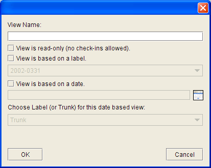

|
ViewsA View is a way to look at a QVCS project. When you first create a QVCS project, QVCS-Enterprise will automatically create the Trunk view -- which is the default way of looking at a QVCS project. You can create additional views of a project by right clicking on a project node and selecting Define View... from the context menu. This will bring up a dialog allowing you to define the kind of view you want to create.  QVCS-Enterprise 2.1 supports four different kinds of views:
The Trunk view is the default view. When you create a project, this is the view you start out with. It serves both as the central location for the archive files and information for a project, and as the base for other views. Normally, you'll do most of your work on the Trunk view. A read-only date-based view is a view constructed with some date you define. Given that date, the view will display what the project looked like at the given date/time. Because of the way it works, the earliest date you can use is the install date of the 2.1 release. In any case, the view will contain the project files as they existed at that point in time -- all filenames and file locations will be the names and locations that were in use at the given time; also, any files that were deleted after the given date/time will still show up. It's like a time machine. The read-only label-based view is similar to the read-only date-based view, except that it uses a label to anchor the view instead of a date. You use this kind of view to see what a project looked like when a particular label was applied. You might use this kind of view to perform a build -- just create the label-based view, assign a location for the view's workfiles, do a 'get' on the files of the view, and voila, you now have a workfile directory tree that matches what the project looked like based on the view's anchor label. As a read-only view, you are not allowed to make any changes to the files in the view, but it is a handy way to recreate what a project looked like at some particular label. The read-write label-based view is similar to the read-only label-based view, except you are also allowed to check out and check in revisions -- with some limitations: you are only allowed to work on the view's tip revisions. QVCS-Enterprise will handle the details under-the-hood. This kind of view is ideal for performing patches to a labeled release: create the read-write view based on the label, assign the workfile location for the view, get the files to that workfile location, and then make your edits (check out/check in) as needed in order to patch that labeled release. Once you are happy with your changes, apply a new label to the result, and then do a build based on that new label. With label-based views, you are not allowed to move the anchor label of a view.... e.g. if there is a label-based view that uses label "2.1" as its anchor, then you are not allowed to apply or remove the "2.1" label from any files on any view, including the Trunk. |
| © Copyright 2004-2010 Quma Software, Inc. All Rights Reserved. |